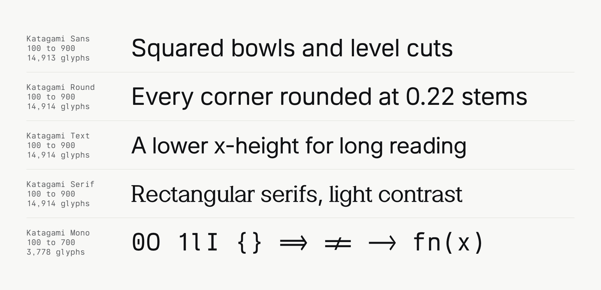

Katagami Round is a proportional sans serif for interfaces and text. It is one of the five members of the Katagami family, which are built from one source by the same scripts: Katagami Sans, Katagami Round, Katagami Text, Katagami Serif and Katagami Mono. Katagami Round starts from the outlines of Inter. Its bowls are less square than those of Katagami Sans. Every convex corner sharper than 20 degrees is rounded with a radius of 0.22 of the stem width, chosen at Regular and applied at every weight. The terminals of c, e, s, a and g are cut level, and G has a spur.

Katagami Round has a roman and an Italic. Each is a variable font with a weight axis from Thin (100) to Black (900), and each weight in steps of 100 is a named instance. The Italic slants 9.4 degrees. It keeps the letterforms, features and line metrics of the roman.
Katagami draws Latin, Greek and Cyrillic. The roman also sets 28 more scripts, among them Arabic, Hebrew, Devanagari, Bengali, Tamil, Thai, Georgian, Armenian and Ethiopic. They are merged from other fonts under the SIL Open Font License and scaled to the x-height of Katagami. The Italic sets Latin, Greek and Cyrillic.
Katagami Round is released under the SIL Open Font License 1.1.